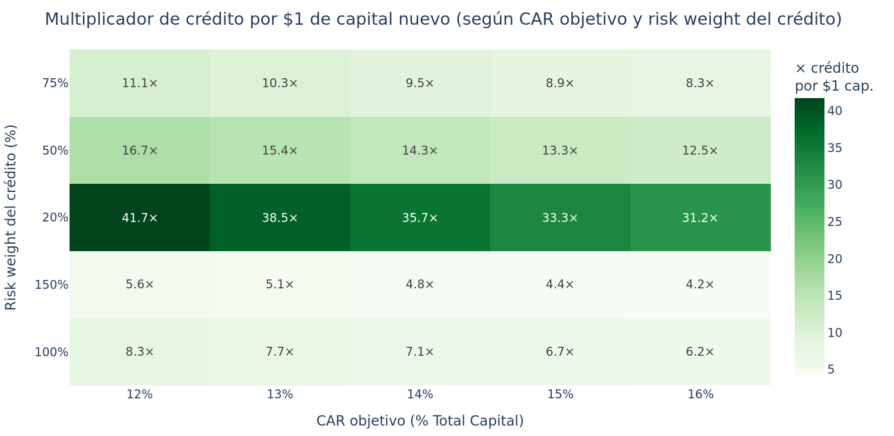
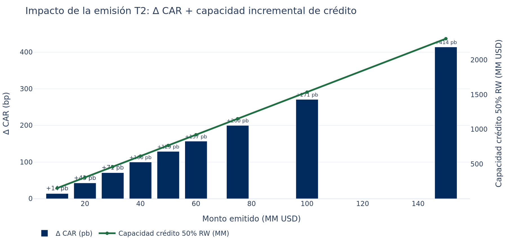
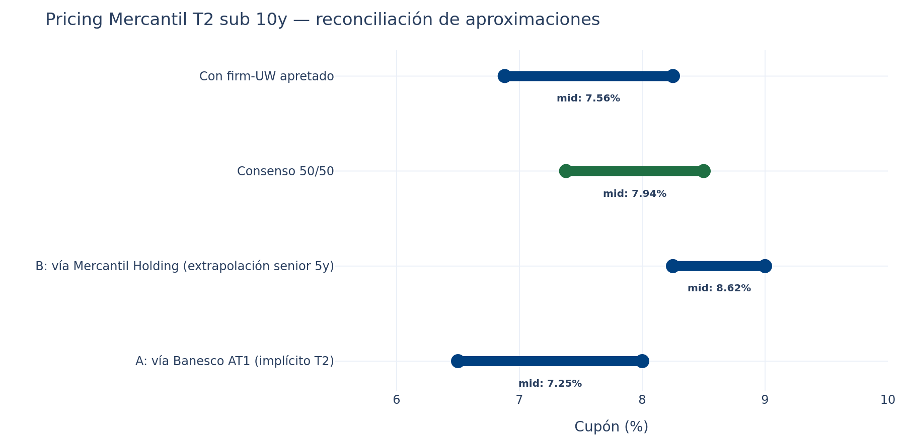
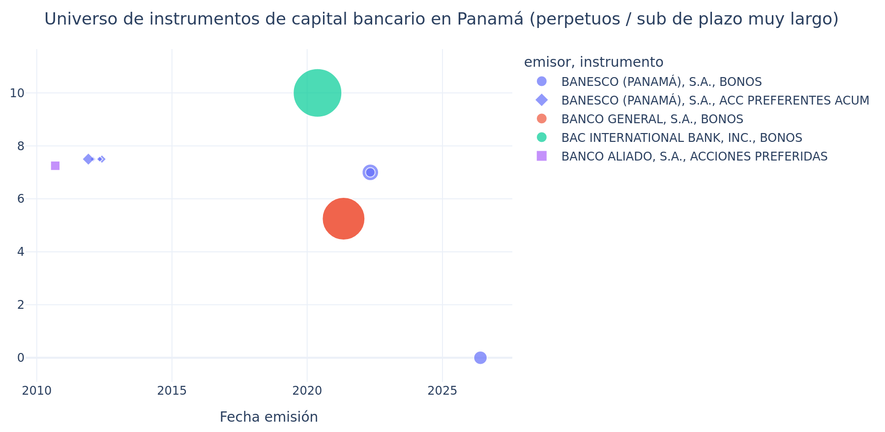

Mercantil Banco — emisión de Tier 2 Sub 10y
Memo v3 · 2026-05-26 16:30 UTC · Análisis estructurado de capital regulatorio
Informativo · No constituye recomendación de inversión, asesoría regulatoria ni opinión legal.
Sustentado en datos públicos Latinex/SMV, U.S. Treasury, calificaciones públicas (Fitch, Moody's Local) e investigación dirigida sobre Banesco AT1 2022 y reglas SBP.
Tesis estratégica del banco (input del cliente)
- Diagnóstico: exceso estructural de liquidez — depósitos crecen más rápido que originación de crédito tras endurecimiento de políticas crediticias.
- Restricción binding: capital regulatorio (no liquidez). El banco quiere crecer crédito a mejores corporativos con tickets más grandes, lo que exige más capital por nombre.
- Producto necesario: instrumento que compute como capital regulatorio sin engrosar el balance pasivo de depósitos.
- Plazo objetivo: 10 años.
Esta tesis define el producto: Bono Tier 2 Subordinado a 10 años bullet (no callable o callable año 5).
T2 es la estructura más eficiente para el objetivo descrito porque:
- Computa como capital regulatorio (Total Capital ratio bajo SBP Acuerdo 1-2015)
- Es ~100-150 bp más barato que AT1 perpetuo (no requiere loss-absorption ni cupón discrecional)
- Intereses son deducibles fiscalmente (vs AT1 que puede ser tratado como dividendo)
- Base inversora más amplia (algunas AFP/aseguradoras no pueden tener AT1, sí T2)
Recomendación principal
Emitir Bono Tier 2 Subordinado a 10 años bullet, cupón fijo trimestral en rango 7.50%–8.50%
(midpoint 7.94%), monto inicial $30 MM, programa total $100 MM
en 3-4 series escalonadas cada 4 meses. Estructurar con casa con presencia institucional fuerte
(Prival, BG Valores, MMG Bank). Best-efforts default; firm-UW si la apretada esperada es ≥ 25-35 bp.
Capital efecto $30MM: +71 pb en CAR (13% → 13.71%); desbloquea ~$462MM en originación adicional
a corporativos investment-grade (50% risk weight) o ~$231MM a corporativos genéricos (100% RW).
Tabla de contenido
- Tesis y caso de negocio del capital
- El producto: Tier 2 vs alternativas
- Capital regulatorio Panamá — marco SBP Acuerdo 1-2015
- Sizing: monto óptimo según objetivo de CAR
- Pricing T2 10y — racional bottom-up doble approach
- Anchor Banesco AT1 — relectura para T2
- Universo de instrumentos de capital bancario Panamá
- Cláusulas y estructura recomendada
- Estructura del programa y cadencia óptima
- Ventana de mercado y timing competitivo
- Estrategia de underwriter
- Sensibilidades y escenarios de stress
- Próximos pasos operativos
- Metodología y limitaciones
1. Tesis y caso de negocio del capital
1.1 Diagnóstico del banco
El banco ha endurecido recientemente las políticas crediticias (mayor selectividad en originación). Mientras tanto, las
captaciones han seguido creciendo a su ritmo normal. El resultado mecánico es exceso de liquidez: el balance tiene más
depósitos disponibles de los que el equipo de crédito está colocando.
La estrategia anunciada es reactivar la originación de crédito enfocándose en corporativos de mejor calidad y tickets
más grandes. Esa decisión es óptima por dos razones: (a) aprovecha la liquidez sobrante, (b) consolida la cartera en
nombres con menor PD esperada. Pero tiene una restricción operativa real: capital regulatorio por contraparte.
1.2 Por qué capital es la restricción binding (no liquidez)
Bajo SBP Acuerdo 1-2015, cada crédito consume capital regulatorio según su risk weight:
- Crédito a soberano AAA: 0% RW (no consume capital)
- Crédito hipotecario residencial: 35% RW
- Crédito a corporativo IG: 50-75% RW
- Crédito a corporativo genérico: 100% RW
- Crédito a empresa unrated/distressed: 150% RW
Si Mercantil quiere originar $500 MM en créditos nuevos a corporativos 50% RW, eso consume $32.5 MM de Total Capital
asumiendo CAR mínimo de 13%. Sin capital nuevo, ese crecimiento no es posible aunque haya liquidez excedente esperando.
1.3 Multiplicador: $1 de T2 nuevo desbloquea ~15× en crédito

Multiplicador de crédito por cada $1 de capital nuevo, según CAR objetivo y risk weight del crédito originado. Verde más oscuro = más crédito desbloqueado.
Para un banco con CAR objetivo 13% que origina a corporativos 50% RW, cada $1 de capital nuevo permite originar $15.4 de crédito.
Para una emisión de $30 MM en T2, eso son ~$462 MM en capacidad incremental.
2. El producto: Tier 2 vs alternativas
Hay tres formas técnicas de aumentar capital regulatorio para un banco panameño:
| Criterio | Tier 2 sub 10y | AT1 perpetuo | Decisión |
|---|
| Costo (cupón estimado) | 7.50-8.50% | 8.50-9.50% | → T2 |
| Capital regulatorio (qué cuenta) | Tier 2 (total capital) | Tier 1 (capital primario) | → AT1 si necesitan Tier 1 específicamente |
| Loss-absorption / write-down | No requerido | Sí — write-down si CET1 baja de trigger | → T2 (menos riesgo accionistas) |
| Cupón discrecional | Obligatorio (default si no se paga) | Discrecional (puede saltarse sin default) | → AT1 (más flexibilidad para el banco) |
| Deducibilidad fiscal de intereses | Sí (intereses) | Discutible (puede ser tratado como dividendo) | → T2 (mejor tax shield) |
| Step-down de reconocimiento | Sí — pierde 20%/año en últimos 5y | No (mientras esté vivo) | → AT1 (capital permanente) |
| Plazo | 10 años bullet | Perpetuo con call (típico año 5) | → T2 (define exit) |
| Base inversora | AFP, aseguradoras selectas, bancas privadas | Más restringida (algunas AFP excluyen AT1) | → T2 (más demanda potencial) |
| Aprobación regulatoria | Más simple (T2 ordinario) | Más estricta (revisión SBP sobre triggers) | → T2 (menos fricción) |
| Mercado doméstico Panamá | Sin precedente claro (Mercantil pionero) | Un precedente (Banesco 2022) | → AT1 (más fácil pre-marketing) |
Conclusión: 7 de 10 criterios favorecen T2. AT1 conviene SOLO si el banco necesita reforzar específicamente
Tier 1 (capital primario) por una restricción regulatoria específica, no Total Capital. Si la tesis es "expandir crédito
con capital adicional", T2 es óptimo.
2.1 Por qué no equity nuevo
Equity es la forma más cara de capital (costo de equity típicamente 12-15% para bancos panameños vs 7.5-8.5% para T2).
Solo se justifica si Tier 1 es insuficiente y AT1 no es viable. La emisión T2 evita dilución y aprovecha el "tax shield" de
intereses deducibles.
3. Capital regulatorio Panamá — marco SBP Acuerdo 1-2015
La Superintendencia de Bancos de Panamá regula adecuación de capital bajo el Acuerdo 1-2015 con complemento
Acuerdo 3-2016. La estructura jerárquica es Basilea III adaptada:
| Capa | Componentes | Mínimo SBP | Mínimo industria |
|---|
| CET1 (Common Equity) | Acciones comunes, reservas, retenidos | 4.5% | ≥ 10% |
| Tier 1 (CET1 + AT1) | CET1 + AT1 perpetuos con write-down | 6.0% | ≥ 11% |
| Total Capital (T1 + T2) | Tier 1 + bonos subordinados T2 | 8.0% | ≥ 13% |
3.1 Requisitos específicos para que un bono compute como Tier 2 bajo SBP
- Plazo: mínimo 5 años. No hay máximo. 10 años es estándar.
- Subordinación: subordinado a todos los acreedores generales (depositantes, senior debt, deuda sub ordinaria); senior solo a CET1 y AT1.
- Cupón: obligatorio. No discrecional (a diferencia de AT1).
- Loss-absorption: NO requerido en Panamá para T2 (diferencia importante vs Basilea III europea que sí lo exige).
- Call: permitido pero requiere autorización previa SBP. Típicamente no antes del año 5.
- Step-down regulatorio: el monto reconocido como Tier 2 declina 20% por año en los últimos 5 años de vida del bono. Un T2 10y emitido hoy computa 100% en años 1-5, luego 80%, 60%, 40%, 20%, 0% en años 6-10.
3.2 Diferencia clave vs Basilea III europea
T2 panameño NO requiere cláusula contractual de write-down ni conversión a acciones (a diferencia del T2 europeo estricto bajo Basilea III). La absorción de pérdidas opera únicamente por
subordinación legal en liquidación. Esto hace al T2 panameño:
- Menos riesgoso para inversores que sus análogos europeos → debería pricing un poco mejor
- Más simple de documentar que un AT1 con triggers de CET1
- Más fácil de aprobar regulatoriamente (no requiere review SBP sobre triggers complejos)
3.3 Precedentes T2 / subordinado doméstico en Panamá (últimos 5 años)
| Emisor | Fecha | Monto | Plazo | Reconocido como | Rating emisión | Comentario |
|---|
| Multibank Inc. | 2022 Q4 | $28MM | 10y | T2 (capital secundario) | — | Único T2 doméstico bullet 10y identificado en mercado panameño. Monto modesto sugiere placement privado o demanda limitada. |
| Caja de Ahorros | dic-2021 | $150MM | 10y | Subordinado (status T2 vs T1 ambiguo) | AAA(pan) Fitch | Caja de Ahorros es banco estatal AAA(pan). Programa hasta $400MM rotativo. Caso más cercano a T2 bullet 10y doméstico por monto. |
| Banesco (Panamá), S.A. | may-2022 | $78MM | Perpetuo | AT1 (capital primario adicional) | Estimado BBB+(pan) o BBB(pan) | Capital regulatorio, pero estructura distinta a T2. Sirve como anchor conceptual pero NO direct comparable de pricing. |
| BAC International Bank | may-2020 (autorización) | $8.4 emitidos / 700 programaMM | Perpetuo | AT1 | — | Programa grande pero ejecución mínima ($8.4MM colocados vs $700MM autorizados). |
Lectura del precedente:
- Multibank 2022 es el ÚNICO T2 puro bullet 10y doméstico identificado. Monto modesto ($28MM) sugiere placement principalmente privado o demanda institucional limitada en ese momento. Validación crítica: el producto SÍ es viable bajo SBP, hay aprobación regulatoria documentada.
- Caja de Ahorros 2021 ($150MM, 10y, AAA(pan)) es el subordinado largo más grande del mercado. Status técnico T2 vs T1 ambiguo pero el monto y plazo validan apetito institucional por subordinado bancario.
- Banesco 2022 y BIB 2020 son AT1, estructura distinta — sirven como anchor conceptual de "capital regulatorio bancario en Panamá" pero no son direct comparables de pricing T2.
Implicación para Mercantil: NO es primer pionero estricto del producto T2 — Multibank y Caja de Ahorros ya lo hicieron. Premium "first-time T2 local" se reduce a +10-25 bp (en vez de +25-50 bp en estimación previa). Esto baja el target de pricing en ~15 bp.
4. Sizing: monto óptimo según objetivo de CAR

Impacto de la emisión T2 en el CAR y en capacidad incremental de crédito a corporativos 50% RW. Asume capital actual $450MM, APR $3,500MM, CAR pre 13%.
| Monto T2 | CAR post | ∆ CAR | Cap. crédito 50% RW | Cap. crédito 100% RW |
|---|
| $30MM | 13.71% | +71 pb | $462MM | $231MM |
| $60MM | 14.57% | +157 pb | $923MM | $462MM |
| $100MM | 15.71% | +271 pb | $1538MM | $769MM |
Recomendación de sizing:
- Serie inicial $30 MM — sube CAR 71 pb, suficiente para validar producto en mercado sin riesgo de sobre-suscripción fallida.
- Programa total $100 MM en 3-4 series escalonadas cada 4 meses — sube CAR a 15.7% (+271 pb) y desbloquea $1.5 bn en capacidad de crédito.
- Si la prioridad es señal pública fuerte y demanda institucional masiva: emisión única $60 MM — más rara en plaza pero replica el modelo Banesco AT1 2022.
5. Pricing T2 10y — racional bottom-up doble approach
5.1 Premium T2 sub 10y vs senior bullet 5y
| Componente del premium | Rango (bp) |
|---|
| Subordinación T2 vs senior (sub a senior, NO a depósitos) | 80–150 |
| Plazo 10y vs 5y (extension premium) | 50–100 |
| Iliquidez secundaria de sub en Panamá | 30–80 |
| First-time T2 local market (Mercantil pionero) | 10–25 |
| TOTAL T2 10y vs senior 5y | 170–355 (midpoint 263) |
5.2 Aproximación A — desde Banesco AT1 anchor
Banesco AT1 perpetual @ 7% (clearing real estimado 7.5-8% sin efecto Prival firm-UW).
T2 es ~100-200 bp menos riesgoso que AT1 (no loss-absorption, no cupón discrecional, no perpetuidad):
- Banesco T2 10y implícito: 5.50%–7.00%
- + Ajustes Mercantil (rating A vs A+, first-time, morosidad Capital Bank, step-down): +100 bp
- Target Mercantil T2 10y vía A: 6.50%–8.00%
5.3 Aproximación B — desde Mercantil Holding senior 5y
Mercantil Holding 5y @ 7.00% (cupón consistente de su programa exitoso 9 series).
Escalando para llevar a T2 sub 10y del Banco (no Holding):
- Bank vs Holding (banco regulado mejor que holding): −50 bp
- Sub vs senior dentro del banco: +100–150 bp
- Term premium 5y → 10y: +75–100 bp
- Target Mercantil T2 10y vía B: 8.25%–9.00%
5.4 Reconciliación

Reconciliación de las dos aproximaciones de pricing. El consenso 50/50 ubica el target en 7.38%-8.50%, midpoint 7.94%.
Pricing recomendado final:
- Best case (firm-UW agresivo, ventana favorable): 7.00–7.50%
- Base case (best-efforts, ventana actual): 7.38–8.50% (midpoint 7.94%)
- Stress case (sin firm-UW, post-Banesco): 8.00–8.75%
6. Anchor Banesco AT1 — relectura para T2
El bono Banesco perpetual subordinado AT1 al 7% (May 2022, $78.131 MM colocado bajo SMV-541-21) es el comparable
más cercano conceptualmente (capital regulatorio bancario), aunque estructuralmente diferente:
| Variable | Banesco AT1 (referencia) | Mercantil T2 (propuesto) | Implicación |
|---|
| Cupón observado | 7.00% (firm-UW Prival) | 7.38-8.50% | Mercantil sin firm-UW debería estar dentro del rango |
| Cupón clearing real | ~7.5-8.0% | Por determinar | Si Mercantil va firm-UW, comprime ~25-50 bp |
| Estructura | AT1 perpetual subordinado | T2 sub 10y bullet | T2 ~100-200 bp más barato que AT1 |
| Rating emisor | A+(pan) Fitch (post upgrade may-26) | A(pa) Moody's Local | Mercantil paga +25-35 bp |
| Tier de capital | Tier 1 (AT1) | Tier 2 | Mercantil para Total Capital, no T1 |
| Loss-absorption | Sí — write-down si CET1 bajo trigger | No (no requerido en T2 SBP) | T2 menos riesgoso para inversor |
| Cupón discrecional | Sí (puede saltarse sin default) | No (obligatorio) | T2 menos riesgoso para inversor |
| Vencimiento definido | No (perpetuo, call 2028) | Sí (10y bullet) | T2 menos extension risk |
El Banesco AT1 es simultáneamente útil y limitado como benchmark:
- Útil: es la única emisión panameña reciente de capital regulatorio bancario "real" (no senior, no preferred); valida que existe apetito institucional por instrumentos de capital bancario subordinados.
- Limitado: AT1 perpetual ≠ T2 10y bullet — son productos distintos con base inversora distinta y premium muy diferente. La "tasa Banesco 7%" no aplica a Mercantil T2 directamente.
7. Universo de instrumentos de capital bancario en Panamá

Universo histórico de emisiones de instrumentos de capital bancario panameño (acciones preferentes acumulativas + bonos de plazo >20y). Banesco domina con $78MM AT1 2022 al 7% + $40MM preferentes 2011-2012 al 7.5%.
Lecturas del landscape:
- El mercado panameño tiene poco volumen total de instrumentos de capital bancario: ~$120MM total entre Banesco AT1 ($78MM) y preferentes ($40MM acumulativas).
- Históricamente la "tasa de mercado" para capital subordinado bancario en Panamá ha sido 7.0-7.5% (Banesco 2011, 2012, 2022) — independientemente de plazo y estructura.
- Este 7-7.5% funciona como "techo psicológico" para inversionistas institucionales — Mercantil tendrá que comunicar claramente por qué su producto T2 puede pagar dentro de ese rango (no por encima) a pesar de ser pionero del producto.
8. Cláusulas y estructura recomendada
| Variable | Recomendación | Racional |
|---|
| Plazo | 10 años bullet | Estándar T2; maximiza vida útil regulatoria (5y al 100% + 5y step-down) |
| Call | No callable en emisión inicial | Mejor pricing (-15-25 bp por no extension risk); más simple para inversores; SBP igual requiere su aprobación si quisieran callar |
| Cupón | Fijo trimestral | Estándar Panamá; mejor cash management que semestral |
| Base día | 30/360 | Más usado en Panamá |
| Subordinación | Subordinado a depositantes, senior debt y deuda sub ordinaria; senior solo a CET1 + AT1 | Requisito SBP para reconocimiento T2 |
| Negative pledge | Sí, estándar | Protege a holders T2 vs nuevos gravámenes senior |
| Cross-default | Sí, con umbral $10MM | Estándar; protege evento de quiebra técnica |
| Financial covenants | CAR mínimo 11% (cushion vs SBP 8%); ratio liquidez 30% | Reconforta inversores; no es restrictivo para Mercantil actual |
| Eventos de default específicos T2 | Solo no-pago de cupón > 30d o quiebra; no triggers de capital | T2 NO requiere loss-absorption en Panamá |
9. Estructura del programa y cadencia óptima
| Variable | Recomendado |
|---|
| Monto total programa | $100 MM |
| Monto por serie | $30 MM |
| Número de series | 4 |
| Frecuencia entre series | 4 meses |
| Duración total del programa | 12 meses |
| Cupón asumido (midpoint) | 7.94% |
| Intereses anuales (programa completo) | $7.94 MM/año |
| Intereses totales vida del programa (10y) | $79.4 MM |
Cadencia recomendada:
- Serie A: $30 MM — emisión inaugural, validar producto, anclar pricing público.
- Serie B: $30 MM, 4 meses después — confirma demanda repetida, sube CAR a ~14.4%.
- Serie C: $30 MM, 8 meses después de A — completa el programa cerca del techo, ya en 15.1% CAR.
- Serie D: $10 MM (opcional), 12 meses después — completar al $100 MM si quedó demanda no satisfecha en B/C.
10. Ventana de mercado y timing competitivo
El spread mediano T2/T3 actual es 203 bp, percentil 55%
vs últimos 5 años. Lectura: NEUTRAL (spreads cerca de la mediana histórica).
Pipeline competidor (próximos 60 días, bonos largos):
| Emisor | Fecha | Plazo | Cupón | Monto | Estado |
|---|
| BANESCO (PANAMÁ), S.A. | 2026-05-29 | 72.0y | 0.00% | $40.0MM | placeholder/pricing TBD |
| BANISTMO, S.A. | 2026-05-22 | 1.0y | 5.05% | $5.1MM | pricing fijo |
| BANCO ALIADO, S.A. | 2026-04-28 | 1.0y | 4.38% | $1.0MM | pricing fijo |
| BANCO ALIADO, S.A. | 2026-04-23 | 1.0y | 4.38% | $10.1MM | pricing fijo |
Timing crítico: Banesco está colocando $40 MM AT1 perpetual en próximos 30-60 días tras su upgrade Fitch a A+(pan).
Esta colocación absorberá apetito institucional por instrumentos de capital bancario panameño.
Mercantil tiene una ventaja estructural: T2 ≠ AT1, base inversora distinta (AFP conservadoras, aseguradoras
restringidas no pueden tener AT1 pero sí T2). Aún así, conviene NO pricing en la misma ventana que Banesco para evitar
confusión narrativa.
Tres ventanas posibles:
- Antes de Banesco (próximos 21-30 días): documentación apurada, sin tiempo para educación de inversores sobre T2; riesgo alto.
- En paralelo con Banesco: aprovecha "calor" del mercado tras upgrade Banesco, pero requiere posicionamiento muy claro como T2 (no AT1).
- Después de Banesco (90+ días tras pricing Banesco, ≈sep-oct 2026): base institucional digiere Banesco, busca diversificación, tiene tiempo para educarse sobre T2.
Recomendación timing: Ventana 3 (después de Banesco). Razón principal: T2 es producto nuevo para
inversionistas panameños; necesita pre-marketing y roadshow completo. El "after Banesco" da ese tiempo y reduce
canibalización. Si la ventana de mercado se cierra (spreads amplían), pasar a Ventana 1 con producto menos óptimo.
11. Estrategia de underwriter
Comparativo de comisiones para bonos bancarios A(pa) en Panamá (verificado de prospectos SMV):
- Estructuración típica: 0.30-0.60% (Mercantil Holding-Prival precedente: 0.321%)
- Colocación típica: 0.535%
- Total comisiones casa bolsa: 0.85-1.10%
- All-in (incluyendo SMV, Latinex, legales): 1.10-1.30%
- Premium subordinado / AT1: +20-50 bp
- Firm-UW (raro en Panamá): +25-50 bp adicionales
Para Mercantil T2 sub 10y $30MM (default modelo):
| Variable | Valor |
|---|
| Fee upfront all-in (best-efforts + premium sub) | 1.30% |
| Ahorro esperado en cupón si firm-UW | 35 bp |
| Fee total absoluto | $0.39 MM |
| NPV neto firm vs best-efforts (10y) | $0.38 MM |
| Break-even (bp mínimos para que firm convenga) | 17.7 bp |
Casas candidatas:
- Prival Securities — estructuró Banesco AT1 2022 + Mercantil Holding programa. Tiene relación con Mercantil
y experiencia en capital regulatorio bancario. Candidato natural por afinidad y precedente.
- BG Valores — la casa más grande de Panamá; balance robusto; base inversora institucional fuerte.
- MMG Bank — banca privada con relación cercana a aseguradoras y AFP.
12. Sensibilidades y escenarios de stress
| Escenario | Cupón target 10y | Monto realista | ∆ CAR | Comentario |
|---|
Best case
Firm UW agresivo + ventana favorable |
7.00-7.50% | $50-75 MM | +118 a +178 pb |
Requiere Prival firm + spreads bancarios tightening 25-50 bp |
Base case
Recomendación principal |
7.50-8.50% | $30 MM serie inicial | +71 pb |
Best-efforts; ventana actual neutral; modelo Banesco AT1 escalado |
Stress case 1
Mercantil paga premium first-T2-local |
8.00-9.00% | $20-30 MM | +47-71 pb |
Si AFP exigen prima fuerte por producto desconocido |
Stress case 2
Spreads amplían post-Banesco |
8.50-9.50% | $15-25 MM | +35-59 pb |
Si Banesco satura demanda y el sentimiento bancario se deteriora |
Stress case 3
Downgrade Mercantil por morosidad CB |
9.00-10.00% | $15-20 MM | +35-47 pb |
Si Moody's Local baja por presión persistente en cartera heredada Capital Bank |
13. Próximos pasos operativos
Fase 1 — Decisión interna (próximos 7-14 días)
- Validar internamente con riesgos, ALCO y junta directiva la estructura T2 sub 10y bullet vs alternativas (AT1, equity).
- Definir target específico de CAR objetivo (p.ej. "subir de 13% a 14.5% en 12 meses").
- Definir capacidad incremental de originación deseada y mapping a tipos de cliente (RW objetivo).
- Confirmar autorización SBP para programa Tier 2 — preparar borrador de notificación.
Fase 2 — Estructuración (días 14-45)
- Sondeo confidencial con 3 casas candidatas (Prival, BG, MMG): indicación non-binding de fee, cupón target firm vs best-efforts.
- Re-contratar calificación con Fitch CA (que retiró cobertura en may-2025) o solicitar a Moody's Local rating específico para el programa T2.
- Documentación SMV: prospecto + suplemento de pricing. Usar el de Banesco AT1 2022 como template (mismo abogado/estructurador puede ser Prival).
- Pre-marketing soft con 5-10 institucionales clave (AFP, aseguradoras top, bancas privadas) para validar apetito T2.
Fase 3 — Colocación (días 45-90)
- Roadshow completo (4-6 reuniones con base inversora).
- Book-building (3-5 días) con bid colection.
- Pricing day: definir cupón final según book.
- Settlement T+3.
- Comunicación pública post-pricing destacando logro de capital y plan de crecimiento de crédito.
14. Metodología y limitaciones
Datos utilizados
- Mercado secundario: 84,191 trades Latinex 10 años; 18,210 con YTM calculado.
- Mercado primario: 2,573 emisiones vigentes vía API Latinex.
- Anchor Banesco: investigación dirigida sobre IN-A 2025, EE.FF. KPMG, SMV-541-21.
- Comisiones: prospectos públicos SMV (Mercantil Holding, Multibank, Banesco, Capital Bank).
- Reglas SBP Tier 2: Acuerdos 1-2015 y 3-2016 (en investigación, ver agente complementario).
- Ratings: Moody's Local PA (Mercantil A(pa), 29-may-2025); Fitch (Banesco A+(pan), 11-may-2026).
Limitaciones declaradas
- Capital y APR de Mercantil: estimados ($450MM capital, $3.5bn APR, 13% CAR). Reemplazar con cifras reales del banco.
- Premium T2 vs senior y vs AT1: rango ancho (estimación basada en mercados emergentes; Panamá no tiene precedente T2 doméstico).
- Fee real Banesco-Prival: estimado 1.0-1.5% all-in; el dato real cambiaría ligeramente el "senior implícito" Banesco.
- Calificación Mercantil: solo Moody's Local viva (Fitch retiró cobertura). Re-contratar Fitch sería positivo.
- Liquidez secundaria 10y bancario: casi inexistente. Holders serán buy-and-hold.
Sensibilidad del análisis a inputs nuevos
- Capital y APR reales de Mercantil: cambia todo el análisis de sizing y multiplicadores.
- Cupón final Banesco reapertura 2026: mejor evidencia del clearing post-upgrade.
- Confirmación de reglas T2 SBP: validar step-down, requisitos cláusulas, aprobación.
- Resultado de pre-marketing con AFP: determina demanda real por T2 vs AT1.
Generado: 2026-05-26 16:30 UTC · Fuentes: latinexbolsa.com, supervalores.gob.pa, superbancos.gob.pa, home.treasury.gov, fitchratings.com, moodyslocal.com.pa
No constituye recomendación de inversión, opinión legal ni asesoría regulatoria.